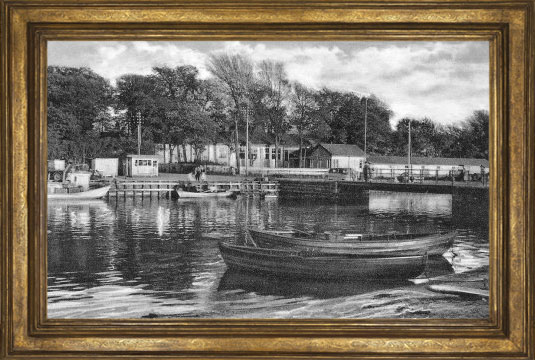

Norsminde Fiskehus har eksisteret over 60 år, med mange forskellige forpagtere. Fiskehuset er havnens perle, og er et populært spisested blandt de lokale. Der har altid været fokus på at servere frisk fisk og på de berømte fiskefrikadeller.
I år 2018 fik Fiskehuset en stor renovering samt en tilbyggelse til Fiskehuset. Der er nu plads til mange flere mennesker både inde og ude.
